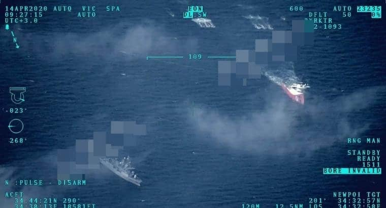
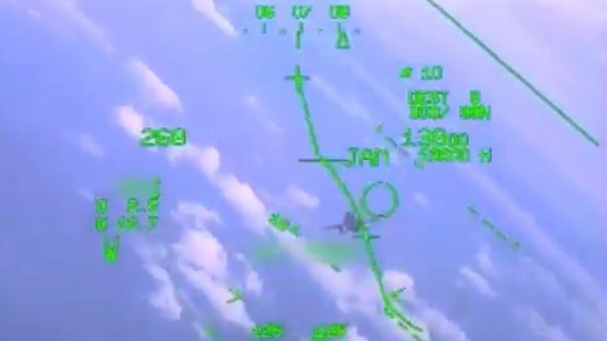

爱琴海燃起战火
地点：东地中海
日期：2020年6月11日
描述：
几十年前，在“1987年危机”期间，希腊和土耳其因爱琴海有争议的钻探区域而几近爆发武装冲突。土耳其以 Piri Reis 和 Sismik 1 号船不断扩大海上勘探活动，在两国之间制造了紧张的挑衅气氛。希腊还计划将正在萨索斯岛（Thasos）附近海域钻探石油的公司联合体国有化，并计划在该岛以东 11 英里处进行钻探活动，土耳其政府认为此举非法且具有挑衅性。危机迅速升级，两国军队均进入最高戒备状态，两国的政治和军事领导人威胁称，若对方阻挠，将使用武力。
随着国际压力加大（主要来自其他北约盟国），英国卡林顿勋爵（Lord Carrington）——北约秘书长——敦促希腊和土耳其避免使用武力，并提出愿意充当调解人，危机遂告结束。

。
土耳其总理雷杰普·塔伊普·埃尔多安（Recep Tayip Erdgogan）最近公布了他的计划：让土耳其在该地区发挥更大作用，并将该国的影响力范围扩展到其实际边界之外
2019年9月2日：土耳其总理在公布其“Mavi Vatan”（蓝色家园）计划时明确表达了意图。基于这一主张，土耳其不正式承认靠近土耳其大陆的任何希腊岛屿的专属经济区权利，从而声称半个爱琴海乃至利比亚上方的大片区域都属于本国专属经济区。新当选的希腊政府提出抗议。
2019年12月5日：土耳其-利比亚专属经济区协议公布，数日后土耳其正式将其提交联合国。希腊对此反应强烈，宣布该协议无效。鉴于利比亚内战持续，土耳其公开表示将在军事上援助民族团结政府（GNA）。

2020年1月17日：希腊作出回应，邀请利比亚国民军（LNA）领导人哈夫塔尔将军（General Haftar）在另一轮和平谈判前、其前往德国之前进行会谈。
2020年2月：随着叙利亚军队在俄罗斯支持下向北发动一系列反攻，土耳其在叙利亚战线伤亡不断增加。一次空袭中即有 33 名土耳其士兵丧生。
2020年2月28日：土耳其作出回应，宣布解除与希腊陆地边界的一切限制，所有移民均可自由过境。事实上，土耳其政府要员毫不掩饰，其目的是以财政援助要挟欧盟，并破坏希腊政府的稳定。此事升级为一场意志的较量：希腊宣布绝不允许任何非法越境者的坚定立场，动员边防部队、警察和军队，同时接受来自波兰、奥地利和意大利的象征性增援。
2020年3月20日：希腊成功阻止了所有由土耳其警察支持的越境企图，从而守住了它认为是欧洲边界的地方。关于 Covid-19 在土耳其造成影响的传言开始流传，而希腊则面临第二场重大危机，并宣布全面封锁。
2020年4月22日：钻探船 Fatih 号和 Yavuz 号以及科考船 Barbaros 号和 Orucreis 号继续在塞浦路斯视为其专属经济区的海域内作业。它们由多艘土耳其海军舰艇护航，并有无人机支援。希腊外交部谴责此举为海盗行为。 此次行动发生之际，土耳其正因 Covid-19 而损失不断攀升，土耳其里拉自由落体式下跌，油价低到钻探已无利可图。
4月13日至5月3日： 由于国际市场上油气价格低迷、前景不确定，Exxon Mobil、Noble Energy、ENI 和 Total 暂停（为期 2 年）在塞浦路斯专属经济区的大部分海上勘探和钻探活动。
5月3日： 一架运送国防部长前往爱琴海奥伊努塞斯岛（Oinouses）的希腊陆军直升机遭到两架土耳其 F-16 战斗机的骚扰。希腊空军立即作出反应，两架 Mirage 2000-5 mk2 紧急起飞并对其进行了拦截。
2020年5月：希腊被高度评价为成功战胜疫情的国家。关于欧盟财政援助规模的谈判仍在进行，金额约为 150 亿至 250 亿欧元。土耳其发起宣传，宣称本国已无 Covid-19，但适得其反，欧盟宣布该国为不安全地区。酒店餐饮业超过 80% 的企业宣告破产。随后又出现一波对破产企业的国有化浪潮，使本已捉襟见肘的土耳其经济更加不堪重负
2020年6月8日：土耳其与国际货币基金组织（IMF）的非正式磋商内容被泄露。其中部分内容提到多数人早已怀疑的 Covid-19 死亡人数以及土耳其经济的糟糕状况。土耳其对此的反应是宣布严格的资本管制，并归咎于美国和希腊。
当前：土耳其外交部得出了以下严峻的认识：考虑到希腊经济正在迅速复苏，其武装力量也是如此，而与之相对的土耳其武装力量却面临美国的准禁运，他们意识到，以武力强加自身意志的机会之窗已十分狭小。MIT 情报局在一份绝密备忘录中证实，武装力量中有相当一部分对现行政策不满。
土耳其必须迅速行动。时机再好不过，但也十分紧迫
由于 Covid-19，旅游业停摆，因此没有附带损伤或平民伤亡的风险；随着国际贸易缓慢复苏，海上相对空旷，大多数外国资本船只也都停泊在港。此外，Exxon Mobil、Noble Energy、ENI 和 Total 等能源巨头正冻结其在塞浦路斯专属经济区和东地中海的近海活动。
土耳其宣布将立即在至少两处希腊和塞浦路斯强烈争议并视为其专属经济区（EEZ）组成部分的海域开始勘探。
在媒体的密集报道下，并在其海军大部分兵力提供掩护的情况下，两座平台启程，此举预计将象征土耳其主导东地中海，从而颠覆长期存在的现状。
就在希腊政府评估局势之际，又有 2 艘船只在一支足够规模的武装护航下出动的消息见诸媒体。
由于双方实施干扰，AIS（民用船舶自动识别系统）无法完全正常工作。双方处境都很复杂，一旦造成平民或盟国人员伤亡，将引发外交风波。此外，一艘美国潜艇在数小时前驶离苏达港（Suda），正在更广阔的海域活动，意图不明。但显而易见，对其发动任何攻击都将被视为针对美国的敌对行为。
土耳其甚至向联合国提交了其专属经济区声明，划定了其专属经济区（EEZ）边界，其中包含希腊和塞浦路斯专属经济区的大部分。他们警告塞浦路斯和希腊政府，打算捍卫其专属经济区，抵御任何侵犯其现代“生存空间”（Lebensraum，指一国以生存或发展所必需为由主张的领土）的外国船只和军舰。
希腊人面临两难：
是接受既成事实，还是为可能永远改变国家未来的东西而反击。土耳其押注于前者，而希腊人选择了后者！
战争……战争已不可避免！

特别感谢“Pythagorians Alpha Strike”测试团队、Kostas Tottas、Chris Rigoutsos 和 Kostas Anagnostopoulos，他们在此场景初期版本中提供了宝贵的反馈意见